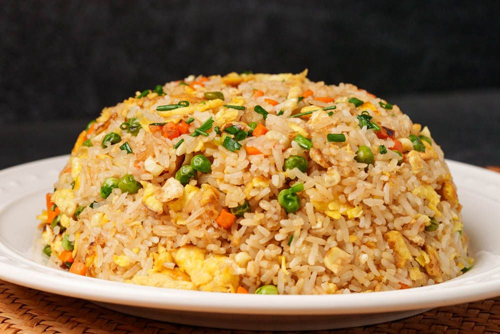

Fried Rice

Description
One of the most popular chinese takeout dishes out there, fried rice is a
classic. There are so many different ways and styles
of fried rice, and today I will show you my take on fried rice.
Ingredients
- Day-old rice from the fridge
- 2 Eggs
- Your Protein of choice
- Half of an onion
- Scallions
- Soy sauce
- MSG
- (Optional) other veggies like carrots and peas
Steps
- Prepare all the ingredients
- In a hot wok, fry your eggs. If needed, fry your protein
- Add your veggies and rice to your wok and continue frying
- When it is almost done, add your seasonings, MSG, soy sauce
- Dish up and add scallions for garnish
Home